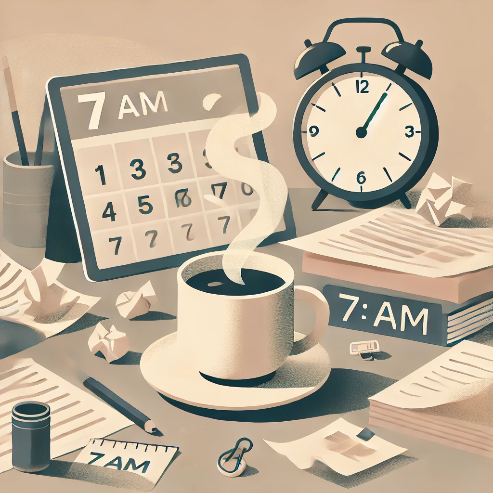

(Az alábbi szöveg fiktív. A ChatGPT-vel készült tesztelés céljából.)
Hétfő reggel. A vekker csörög, én pedig a párnám alá rejtve próbálom ignorálni a valóságot. Miért is van az, hogy hétfőn mindig nehezebb felkelni? Talán azért, mert az álmok ilyenkor különösen édesek, vagy mert a hétvége szabadságának emléke még túl friss.
A kávé készítése közben rájövök, hogy az elmúlt hétvégéről egyetlen dolog maradt meg: a pihenés ígérete, amit sosem tartottam be. Az íróasztalom már vár rám, tele van jegyzetekkel, amelyek között elvész a szemem. Első napirendi pont: "Túlélni a hétfőt."
Délutánra már valamelyest jobb a hangulat. Egy kollégám vicces megjegyzése segít áttörni a hétfői melankóliát, és lassan újra embernek érzem magam. Talán a hét többi része már könnyebb lesz, de hétfő reggel mindig emlékeztet: minden kezdet nehéz.
